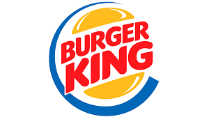
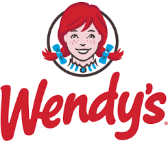

🍔 Welcome to the World of Burgers!
Top Burger Chains
 A global master of localization that adapts its menu to every culture, from the McAloo Tikki in
India to the McPlant in Europe.
A global master of localization that adapts its menu to every culture, from the McAloo Tikki in
India to the McPlant in Europe.

Known for offering more substantial, adult-sized burgers and leading the charge in plant-based meat with the Impossible Whopper.

A premium fast-food player that avoids mass-produced vibes by focusing on higher-quality ingredients, like their famous square patties and fresh-baked buns.